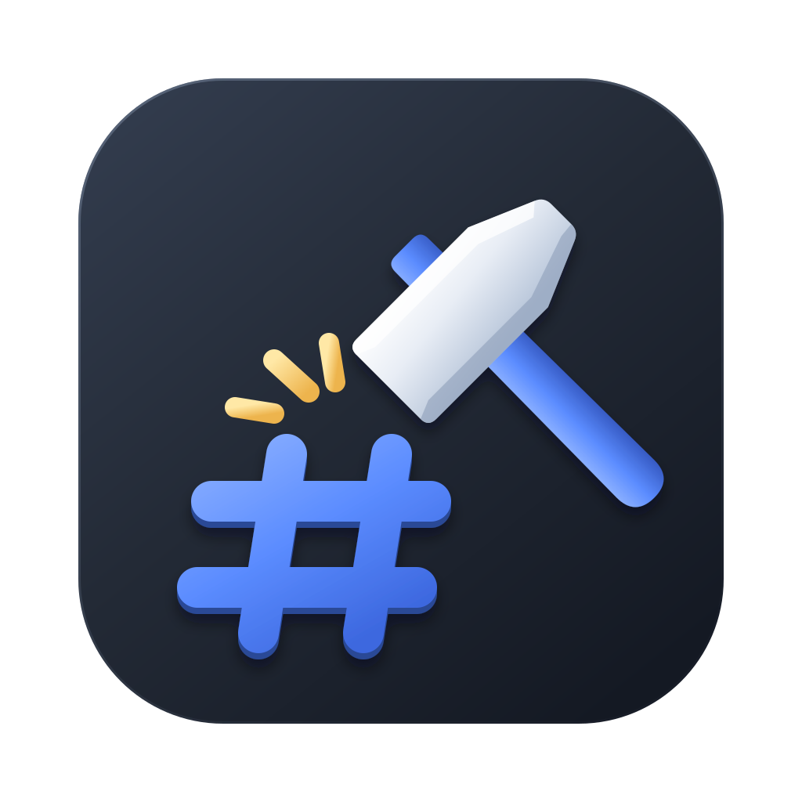

Invoklet
A native, fast, cross-platform C# scratchpad for .NET — free and open source. Write C#, run it in a keystroke and explore the results.
SOFT
Free, open-source software for everyday working people — simple tools that do the job and stay yours.

A native, fast, cross-platform C# scratchpad for .NET — free and open source. Write C#, run it in a keystroke and explore the results.
Every line of code is public. Read it, change it, keep it — no lock-in.
Tools that start fast, stay out of your way and do one job well.
Ideas, bug reports and pull requests are welcome from anyone.